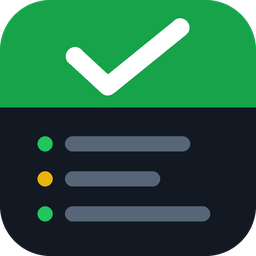

Privacy Policy
Broadcast Monitor · Effective November 1, 2026
Broadcast Monitor is free, open-source software that you download and run on your own computer. It has no servers, accounts or cloud service of its own. This policy explains what it does with information from your Google account.
What it accesses
If you choose to connect YouTube, Broadcast Monitor asks Google for one permission: View your YouTube account (youtube.readonly). With it, the app reads:
- your channel's name, to show which account is connected;
- your current and upcoming live broadcasts: title, status (for example "live" or "preview"), privacy setting and start time;
- the status and health of your live streams, including any problems YouTube reports (such as low bitrate);
- the number of people watching a broadcast that is live.
It does not read your stream keys, videos, comments, subscribers, analytics, email or any other Google data, and it cannot upload, change or delete anything.
How it is used
This information is used only to show your broadcast's status on the Broadcast Monitor dashboard and to decide when to warn you — for example, that you are streaming but have not gone live yet.
Where it is stored
- The sign-in token Google issues is saved in a file on the computer running Broadcast Monitor (
youtube-token.jsonin itsdatafolder). - Broadcast status is held in memory while the app runs. The app's event log (
events.jsonl, in the same folder) records status changes, which can include broadcast titles. - Nothing is stored anywhere else.
Who it is shared with
Your Google data is not sent to the developer or to any server operated by the developer, is not sold, and is not used for advertising. The app contains no analytics or tracking.
It leaves your computer only in these ways, all of which you control:
- Requests to Google's YouTube API, to read the information above.
- If you turn on phone alerts, alert messages (which can include a broadcast's title and status) are sent to the services you set up: Pushcut, Twilio or a webhook address of your choosing.
- The dashboard can be opened by anyone on the same local network as the computer running it.
Removing access and data
- Press Disconnect on the dashboard's YouTube card to delete the saved sign-in.
- Remove Broadcast Monitor's access at any time from your Google account: myaccount.google.com/permissions.
- Delete the app's settings folder (
Documents/Broadcast Monitor) to remove everything it has stored.
Google API Services User Data Policy
Broadcast Monitor's use and transfer of information received from Google APIs adheres to the Google API Services User Data Policy, including the Limited Use requirements.
Changes and contact
Changes to this policy will be published on this page. Questions: open an issue on GitHub.